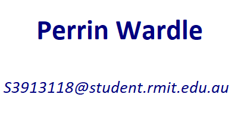

ASSESMENT TASK 3
Team Project
 |
 |
 |  |
|---|
Personal Information |
 |
Shawn MillsShawn is a 26-year-old IT student and full-time logistics employee based in FNQ with hobbies in building computers, photography, drones, and gaming. His working background consists of Hospitality, Sales, Mining and Logistics. Shawn’s IT experience includes computer building, overclocking and minimal web development. His current interests in IT include Cybersecurity, Software development and Networking. https://shawnchristopherr.github.io/A1final/index.html |
|
Nick ParkerNick is a 32-year-old industrial instrumentation manufacturer employee and IT student based in Sydney with hobbies in Tech, music, gaming, and touch football. Nick has a strong sales background focusing on Metrology within the mining, oil, and gas sectors. Nicks IT experience is simplistic but varied, ranging from basic network management, script writing and hardware installation / troubleshooting. Nicks current interests in IT include networking and cloud-based technologies. https://s3913624.github.io/COSC2196Assignment1/index.html |
|
Perrin WardlePerrin is a 22-year-old first-year IT student and Hospitality employee based in Tasmania. His hobbies include game development and spending time with his pets. His background consists of IT Customer Service and Hospitality. Perrin’s IT experience in is expansive, with some areas including administration and virtualization tools like Active Directory, Hyper-V, KVM and Qemu. His current interests include practically anything new he finds interesting and also game development. https://perrinwardle.github.io/Assignment-1/index.html |
|
Daniel WilkinsonDaniel is a 29-year-old IT student and Environmental Science graduate. His hobbies include reading, puzzles, and DIY around the home. Daniel’s background consists of nine and a half years in retail. Daniel’s IT background is very spartan with only minimal exposure to IT in a vocational space but eager to learn as much as possible. Daniels current interests in IT are cybersecurity, AI, and robotics. https://revanvakaian.github.io/Assignment-1-mkII/ |
|
Mathew PhillipsMathew is a 26-year-old first year IT student with a background in hospitality, management, and warehousing (incl. Forklift certified). His hobbies include binge consuming media and playing videogames. Mathew’s IT experience includes a double major in year 11/12 (ICT and programming) and anything to do with playing / modding / scripting / troubleshooting videogames in his spare time. His current interests in IT are mainly focused on less customer-facing and more technical roles, Cyber Security, Software Engineering, and AI. https://herpmaderp.github.io/MatPhillips/ |
 |